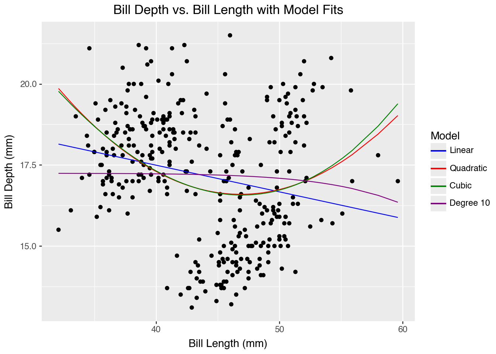

Import the Palmer Penguins dataset and print out the first few rows.
Suppose we want to predict bill_depth_mm using the other variables in the dataset.
Which variables would we need to dummify?
pip install palmerpenguins
Requirement already satisfied: palmerpenguins in /opt/anaconda3/lib/python3.13/site-packages (0.1.4)
Requirement already satisfied: pandas in /opt/anaconda3/lib/python3.13/site-packages (from palmerpenguins) (2.2.3)
Requirement already satisfied: numpy in /opt/anaconda3/lib/python3.13/site-packages (from palmerpenguins) (2.1.3)
Requirement already satisfied: python-dateutil>=2.8.2 in /opt/anaconda3/lib/python3.13/site-packages (from pandas->palmerpenguins) (2.9.0.post0)
Requirement already satisfied: pytz>=2020.1 in /opt/anaconda3/lib/python3.13/site-packages (from pandas->palmerpenguins) (2024.1)
Requirement already satisfied: tzdata>=2022.7 in /opt/anaconda3/lib/python3.13/site-packages (from pandas->palmerpenguins) (2025.2)
Requirement already satisfied: six>=1.5 in /opt/anaconda3/lib/python3.13/site-packages (from python-dateutil>=2.8.2->pandas->palmerpenguins) (1.17.0)
Note: you may need to restart the kernel to use updated packages.
import palmerpenguinsimport pandas as pd# Load the penguins dataset into a pandas DataFramedf = palmerpenguins.load_penguins()# Display the first few rowsdf=df.dropna()df
species
island
bill_length_mm
bill_depth_mm
flipper_length_mm
body_mass_g
sex
year
0
Adelie
Torgersen
39.1
18.7
181.0
3750.0
male
2007
1
Adelie
Torgersen
39.5
17.4
186.0
3800.0
female
2007
2
Adelie
Torgersen
40.3
18.0
195.0
3250.0
female
2007
4
Adelie
Torgersen
36.7
19.3
193.0
3450.0
female
2007
5
Adelie
Torgersen
39.3
20.6
190.0
3650.0
male
2007
...
...
...
...
...
...
...
...
...
339
Chinstrap
Dream
55.8
19.8
207.0
4000.0
male
2009
340
Chinstrap
Dream
43.5
18.1
202.0
3400.0
female
2009
341
Chinstrap
Dream
49.6
18.2
193.0
3775.0
male
2009
342
Chinstrap
Dream
50.8
19.0
210.0
4100.0
male
2009
343
Chinstrap
Dream
50.2
18.7
198.0
3775.0
female
2009
333 rows × 8 columns
Let’s use bill_length_mm to predict bill_depth_mm. Prepare your data and fit the following models on the entire dataset:
Simple linear regression (e.g. straight-line) model
Quadratic (degree 2 polynomial) model
Cubic (degree 3 polynomial) model
Degree 10 polynomial model
Make predictions for each model and plot your fitted models on the scatterplot.
# Code Here# simple linear regression modelimport numpy as npfrom sklearn.linear_model import LinearRegressionfrom sklearn.pipeline import Pipelinefrom sklearn.metrics import r2_score
# simple linear modelbill_model = LinearRegression()bill_model.fit( X=df[["bill_length_mm"]].dropna(), y=df["bill_depth_mm"].dropna())
LinearRegression()
In a Jupyter environment, please rerun this cell to show the HTML representation or trust the notebook. On GitHub, the HTML representation is unable to render, please try loading this page with nbviewer.org.
In a Jupyter environment, please rerun this cell to show the HTML representation or trust the notebook. On GitHub, the HTML representation is unable to render, please try loading this page with nbviewer.org.
In a Jupyter environment, please rerun this cell to show the HTML representation or trust the notebook. On GitHub, the HTML representation is unable to render, please try loading this page with nbviewer.org.
In a Jupyter environment, please rerun this cell to show the HTML representation or trust the notebook. On GitHub, the HTML representation is unable to render, please try loading this page with nbviewer.org.
# plotfrom plotnine import*import pandas as pd# Create a DataFrame with the predicted values for each modelpredicted_df = pd.DataFrame({'bill_length_mm': df['bill_length_mm'],'bill_predict': df['bill_predict'],'square_predict': df['square_predict'],'cubic_predict': cubic_model.predict(df[["bill_length_mm", "bill_depth_mm_cubic"]]), # Add cubic predictions'poly_predict': poly_model.predict(df[["bill_length_mm", "bill_depth_mm_poly"]]) # Add polynomial predictions})( ggplot(df, aes(x='bill_length_mm', y="bill_depth_mm"))+ geom_point()+ geom_line(predicted_df, aes(y='bill_predict', color="'Linear'")) # Plot linear model+ geom_line(predicted_df, aes(y='square_predict', color="'Quadratic'")) # Plot quadratic model+ geom_line(predicted_df, aes(y='cubic_predict', color="'Cubic'")) # Plot cubic model+ geom_line(predicted_df, aes(y='poly_predict', color="'Degree 10'")) # Plot polynomial model+ labs( title='Bill Depth vs. Bill Length with Model Fits', x='Bill Length (mm)', y='Bill Depth (mm)' )+ scale_color_manual(name="Model", values={"Linear": "blue", "Quadratic": "red", "Cubic": "green", "Degree 10": "purple"}) # Add legend)

Are any of the models above underfitting the data? If so, which ones and how can you tell?
Are any of thhe models above overfitting the data? If so, which ones and how can you tell?
Which of the above models do you think fits the data best and why?
The linear model underfits the data because there are less points aligned to the line. The quadratic and the cubic models are overfitting the data and you can tell from this by how theres more points aligned to the curves. The one that best fits the model is the polynomial degree 10 line because it does the best job in explaining the variation in bill depth.